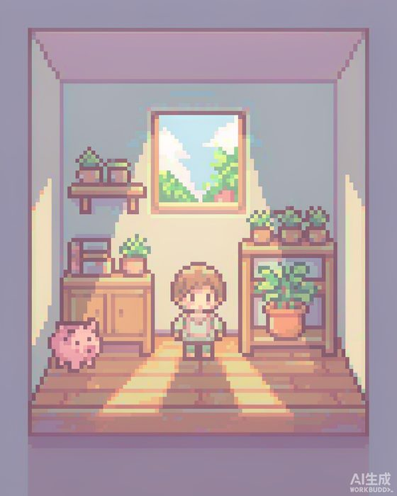
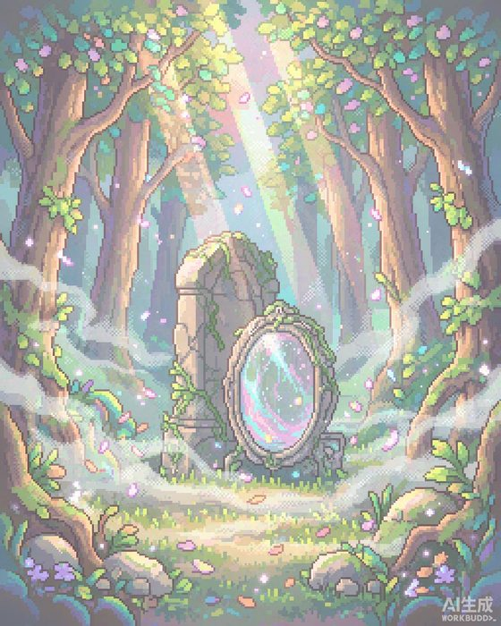
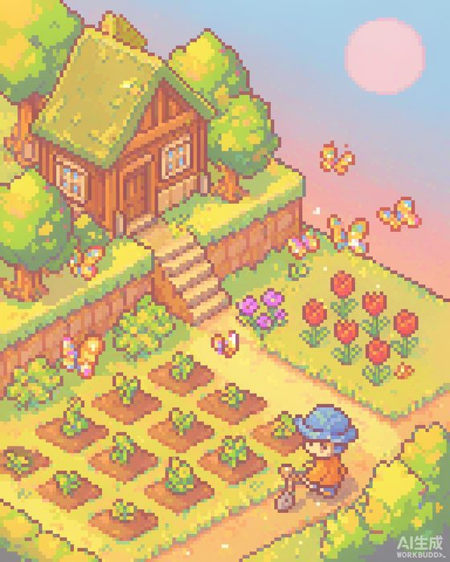
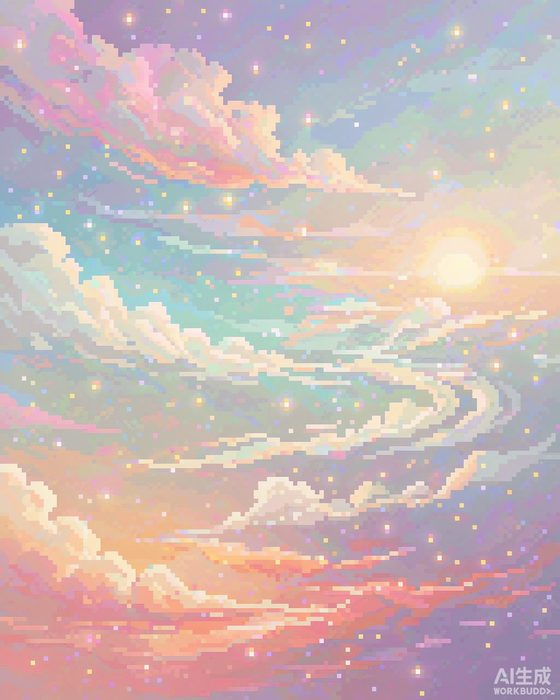

🏠 此刻·家→
🌲 遇见·森林→
🌻 生长·花园→
🌌 星迹·宇宙
▍开拍前准备（照着勾一遍）
- 录屏环境：建议用浏览器无痕窗口打开线上地址（或手机真机），横屏竖屏均可，分辨率 1080p、60fps；提前关掉通知弹窗。
- 演示账号：提前注册一个「演示账号」，数据要提前“养”几天：房间摆好家具、种好 1 株技能作物（长到中期）、点过 2-3 次情绪记录、心灵树洞写过 1 篇，这样星迹里有星、花园有植物、说明书有内容，演示才饱满。
- AI 开关：开拍前在管理后台确认 insight + self_manual + letter + star_miner 等 agent 均已 enabled 并配好 Key，避免演示时按钮灰掉（镜子弹窗不出现“未配置”字样）。
- 镜头语言：每个场景先给 1 秒全景，再点入核心交互；点击动作慢一点，给旁白留时间。
- 备用镜头：结尾可选快闪管理后台（家具库 / 商店 / AI 配置 / 农场布局），证明产品有完整后台支撑。
S0
片头 HOOK
目标：10 秒内让评委记住「予己 = 治愈向向内成长 App」

片头背景：平行小屋
0100:00黑场淡入 Slogan
操作黑场 → 大字淡入「好好爱自己，慢慢成为自己」
画面品牌字卡 + 像素音效
旁白“予己——好好爱自己，慢慢成为自己。”
0200:08四大场景快剪
操作房间 → 森林 → 花园 → 星空，每个约 2 秒切换
画面四场景叠化 + 一句关键词压屏
旁白“一间小屋、一片森林、一座花园、一片星空。”
0300:15定位字卡
操作静态字卡，停留 3 秒
画面「像素轻游戏风格的治愈向内成长 App」
旁白“这是一款像素轻游戏风格的治愈系向内成长 App。”
S1
此刻 · 平行小屋 看见自己
2D 像素小屋 ｜ 今日自我照顾 ｜ 情绪记录 ｜ 布置 ｜ 商店 ｜ AI 说明书
此刻 · 平行小屋
0400:18打开 App 进入小屋
操作打开线上地址 → 启动屏“正在准备你的小屋…” → 用演示账号登录（或“记住我”自动进入）
画面启动遮罩 → 像素小屋全景 + 像素小人“小我”
旁白“打开予己，回到只属于自己的平行小屋。”
0500:28首页全景介绍
操作镜头扫过：小屋家具、小我（“点我记录心情”）、下方自我照顾气泡、“今天可以怎样照顾自己一点”
画面右上角幸福值（❤）+ 金币（0/20）；气泡如喝水 / 深呼吸
旁白“没有打卡、没有任务清单，只有几个今天可以对自己好一点的小气泡。”
0600:40完成一次自我照顾
操作长按「喝水」气泡（约 1 秒）→ 打勾 ✓ → 小我播放喝水动画
画面幸福值 +、今日金币 +（0/20 上涨）
旁白“长按一下，就是一次自我照顾。小我会陪你一起完成。”
0700:55记录此刻情绪
操作点击像素小人“小我” → 情绪记录弹窗 → 选心情 / 写一句 → 保存
画面房间氛围光随情绪变化（记录—反馈—觉察）
旁白“点一下小我，记录此刻的心情。你的情绪，会被房间温柔地回应。”
0801:05布置房间
操作点「布置」→ 拖动家具、缩放 / 转向 / 倾斜 → 点「＋ 家具库」加新家具 → 「完成」
画面编辑工具栏滑入，家具被拖动、旋转
旁白“房间可以自由布置——你按自己喜欢的方式，安放这个小家。”
0901:15金币商店犒劳自己
操作点「存钱罐」家具 → 商店 → 用金币买一件像素家具
画面商店弹出，金币扣减，家具回到房间
旁白“金币只能通过自我关照获得——善待自己之后，也记得犒劳自己。”
1001:22AI 自我说明书（埋伏笔）
操作点「镜子」家具 → 《自我说明书》弹窗，展示 AI 生成内容
画面说明书内容 + “重新总结”入口
旁白“这里会生长出一份属于你的《自我说明书》——一会儿在星迹，我们再回来看它。”
S2
遇见 · 内心森林 认识自己
2D 像素迷雾森林 ｜ 本心对语 ｜ 心灵树洞（AI 引导）

遇见 · 内心森林
1101:25切入森林
操作底部 Tab 切到「遇见」
画面迷雾森林全景 + 光柱 + 萤火飘动
旁白“离开小屋，走进内心森林。这里没有表单和长列表，只有两个木牌。”
1201:33本心对语
操作点「本心对语」木牌 → 与“小我”对话，倾诉一件心事 → 小我回应
画面对语弹窗，书信体交流
旁白“这是和屏幕里另一个自己的对话。不定时，它会主动给你传信。”
1301:48心灵树洞 · AI 引导记录
操作点「心灵树洞」木牌 → 新建日记 → 勾选 AI 引导 → AI 提问、你回答 → AI 附上回应
画面树洞日记面板，AI 引导写作过程
旁白“说不出口的话，可以写进心灵树洞。AI 不会评判，只会用问题引导你一点点梳理自己。”
S3
生长 · 生命花园 成长自己
2.5D 斜等轴测花园 ｜ 技能种子 ｜ 行动养料 ｜ 无惩罚机制

生长 · 生命花园
1402:05切入花园
操作底部 Tab 切到「生长」
画面2.5D 斜等轴测花园全景 + 蝴蝶 / 蜜蜂粒子
旁白“这里是一座生命花园——你种下的，是每个想成为的自己。”
1502:12种下一个技能
操作点击空地（提示“点击任意一块土地，种下一个想学的技能🌱”）→ 选一颗种子（如“每天阅读 10 分钟”）→ 种下
画面种子破土画面
旁白“成长目标对应种子。种下它，剩下的交给时间。”
1602:25行动即养料
操作点已种土地 → 技能记录：展示生长阶段与“养料”来源
画面作物从破土 → 发芽 → 成熟；关联首页自我照顾 / 情绪记录
旁白“每一次自我照顾、每一次情绪记录，都会变成养料，让植物生长。”
1702:38无惩罚机制
操作口播 + 字卡：植物永不枯萎 / 数值只增不减 / 无打卡、无排行
画面可切回首页展示金币“只增不减”
旁白“植物永远不会枯萎——停下只是暂停生长，不会受到任何惩罚。”
S4
星迹 · 个人宇宙 沉淀自己
晨昏星空 ｜ 星座沉淀 ｜ 星点详情 ｜ AI 深度发现 ｜ 说明书迭代

星迹 · 个人宇宙
1802:50切入星迹
操作底部 Tab 切到「星迹」
画面低饱和晨昏流动天空 + 星座图 + 星点
旁白“最后，来到属于你的个人宇宙。房间、森林、花园里的一切，都会在这里沉淀成星。”
1902:58星座沉淀
操作点击星座（如“情绪觉察座”）→ 查看该主题沉淀的全部事件
画面星座汇总面板
旁白“你的每一次记录，都被归类成星座——情绪觉察、本心对话、成就挖掘……”
2003:10星点详情
操作点击一颗星点 → 事件详情卡（星越亮 = 越重要）
画面星点卡片展示那次记录的完整内容
旁白“每一颗星都是一段真实的经历。重要的时刻，会亮得更亮。”
2103:22AI 深度发现 & 说明书迭代（闭环）
操作展示 AI 挖掘的“大星星”（优势挖掘 / 行为模式 / 成长对比）→ 回到镜子查看更新后的《自我说明书》
画面大星星卡 → 切回 Tab1 镜子弹窗
旁白“AI 会从你的星迹里挖掘‘深度发现’，持续更新你的自我说明书——这就是予己的记忆闭环。”
S5
收尾 CLOSING
回到小屋
2203:40回到初心 · 零压力
操作切回 Tab1，口播设计铁则
画面字卡：无排行榜 / 无社交 / 无惩罚 / 无付费墙
旁白“予己不排名、不评判、不惩罚——它只想陪你，慢慢成为自己。”
2303:52结尾字卡
操作黑场淡出 Slogan + 项目名 / 二维码
画面「好好爱自己，慢慢成为自己」
旁白“好好爱自己，慢慢成为自己。予己，欢迎你回来。”
24+30s彩蛋（可选）：管理后台快闪
操作打开 admin 后台，依次快闪：家具库 / 商店商品 / 农场布局 / AI 配置 / 背景资源
画面后台看板 + 可视化配置界面
旁白“整个产品的美术、商品、AI 参数，都由可视化管理后台在线维护。”
🎬 剪辑提示
每段切 Tab 前加 0.3s 转场；旁白和操作尽量同屏；「小我喝水」「植物生长」等动效可以 0.5x 慢放强调；结尾统一加品牌页脚 + 口号音效。
⚠️ 常见翻车点
① 忘开 AI agent → 镜子 / 树洞 AI 引导按钮不亮；② 演示账号太“新” → 星迹没星、花园没植物；③ 长按气泡时长不够 → 提前练习 1 秒长按；④ 网络波动 → 提前缓存好页面（PWA 可离线）。